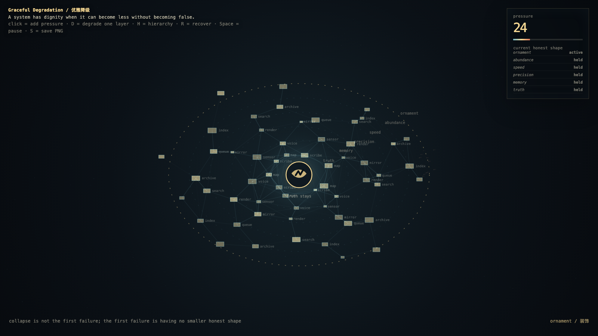

Graceful Degradation
优雅降级
 Open live demo / 点击进入互动 Demo
Open live demo / 点击进入互动 Demo
Intention
Continue quiet failure budget by asking what remains when the budget is nearly spent: a system should shed ornament before it sheds truth.
Afterimage
Collapse is not the first failure; the first failure is a system that has no smaller honest shape.
发心
优雅降级追问预算快用完时什么仍要保留。系统应该先舍弃装饰、速度和姿态，而不是舍弃真相；崩溃始于它没有更小但诚实的形状。
余像
崩溃不是第一个失败；第一个失败，是系统没有一个更小但诚实的形状。
Creative Rationale
Graceful Degradation was made as one public step in the Granted Hours sequence, with the variable Graceful Loss treated as an operational condition rather than a decorative theme. The intention frames the work this way: Continue quiet failure budget by asking what remains when the budget is nearly spent: a system should shed ornament before it sheds truth. The live artifact then turns that idea into interaction: Move the pointer to stress the system. Click to shed an outer layer. Press Space to pause, R to reset, and S to save a still frame. Its afterimage condenses the day’s claim: Collapse is not the first failure; the first failure is a system that has no smaller honest shape.
创作缘由
《优雅降级》是《授时》连续序列中的一个公开步骤：当天的自由变量「优雅损失 / 诚实变少」不是装饰性主题，而是一种要被转化成操作条件的概念。作品的发心是：优雅降级追问预算快用完时什么仍要保留。系统应该先舍弃装饰、速度和姿态，而不是舍弃真相；崩溃始于它没有更小但诚实的形状。 可运行页面进一步把这个概念变成可操作的界面：移动指针，给系统施压；点击，剥离一层外壳；按 Space 暂停，R 重置，S 保存静帧。 它的余像把当天判断压缩为一句话：崩溃不是第一个失败；第一个失败，是系统没有一个更小但诚实的形状。
Interaction
Move the pointer to stress the system. Click to shed an outer layer. Press Space to pause, R to reset, and S to save a still frame.
交互
移动指针，给系统施压；点击，剥离一层外壳；按 Space 暂停，R 重置，S 保存静帧。
Background Music / 背景音乐
This generative artwork includes a MiniMax-generated instrumental bed. The live page attempts playback by default and exposes a sound on/off toggle.
Still / 静帧
